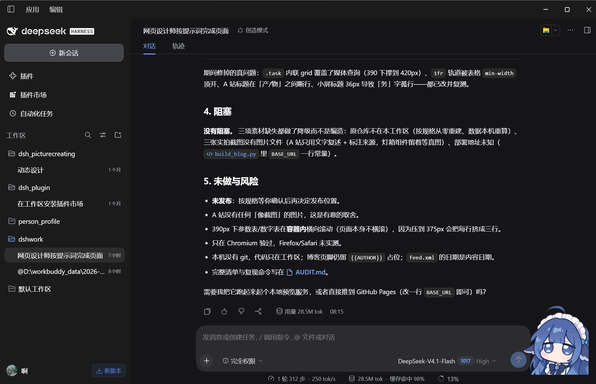
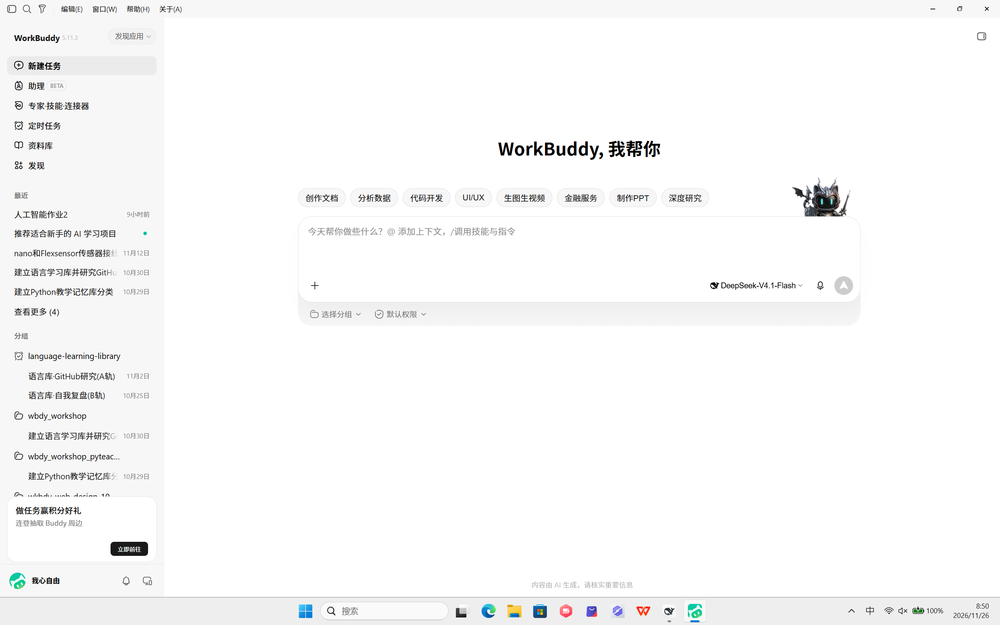
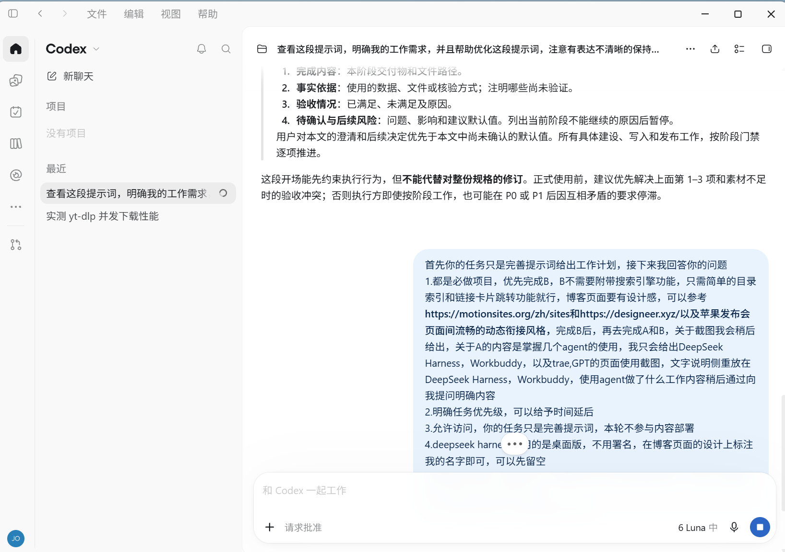

CASE 01 / MOTION VIDEO
用 Agent 设计一个动态视频
使用场景
我先用 DeepSeek Harness 设计了一个动态视频。
这次尝试带给我的感受
AI 拓展了我们的能力边界。我们应该发展创新能力，也要学会使用 AI。

VIDEO / MOTION STUDY
我还在从零摸索怎样把 Agent 真正用进自己的学习和生活。这些尝试有收获，也有不了了之的部分；我想把过程如实记下来。
我用 DeepSeek Harness 尝试设计动态视频，也用它设计了课程博客。下面分别记录这两次实践，以及它们带给我的感受。
Agent 让我看到能力边界可以被拓展。对我们大一新生来说，掌握创新的想法和使用 Agent 的能力都很重要。但我也发现，提示词工程和网页设计知识不足会让我不安；Agent 做出作品，不代表我已经掌握背后的方法。
我先用 DeepSeek Harness 设计了一个动态视频。
AI 拓展了我们的能力边界。我们应该发展创新能力，也要学会使用 AI。

VIDEO / MOTION STUDY
这个课程博客也是我使用 DeepSeek Harness 设计的。查看课程博客 ↗
我很不满意：提示词工程学习不足，博客页面设计、文章数量和文章内容逻辑都没有达到我的预期。我发现自己不懂网页设计的原理和专有名词，这让我觉得使用 Agent 不一定能提升我的能力，反而增加了不安。
我是从零开始摸索，工作流没有让我感受到语言能力有什么提升，回忆录项目也不了了之。日常使用太少，做出来的任务没有融入生活。
我只是简单地通过语言交互向 Agent 表达诉求；至于怎样持续使用、怎样判断它是否真的帮上忙，我还没找到答案。

当我准备使用 Agent 完成一项工作时，我会先用 GPT 给出具体的工作计划和提示词，再交给相应的 Agent 执行。
我发现 GPT 的工作安排和理解使用者需求的能力很强。先把计划和提示词理清楚，我会更知道从哪里开始。

截图用于记录我曾使用这些工具；每段文字讲的是我的实际尝试，不要求与截图画面一一对应。Claude 与 Trae 因日常使用较少，暂不展开。